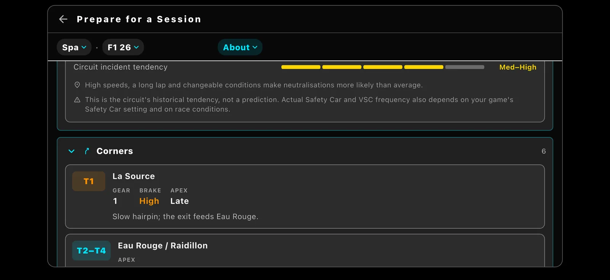
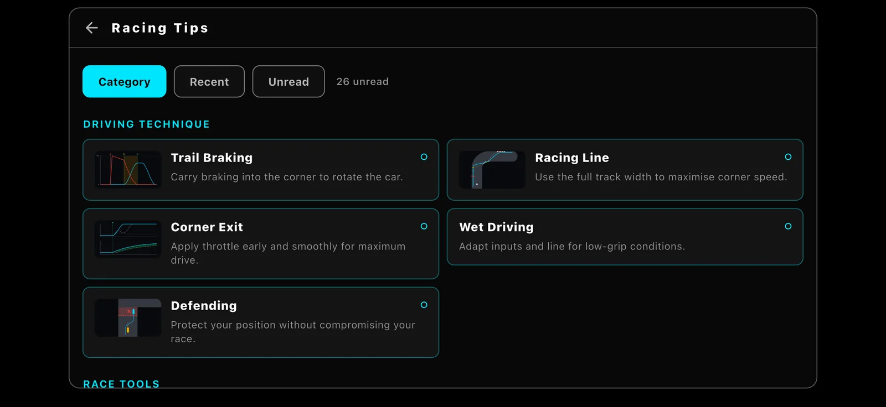
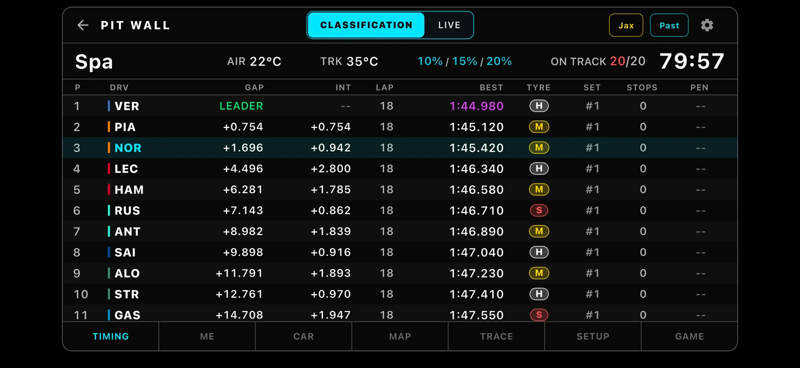
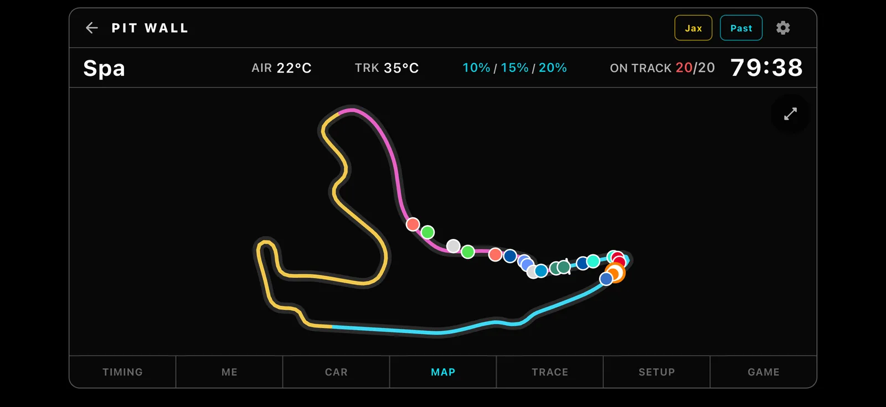
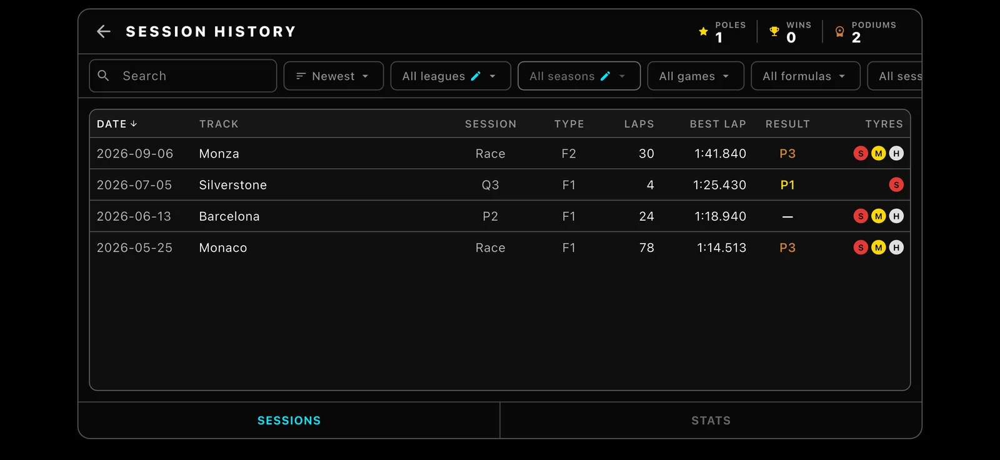
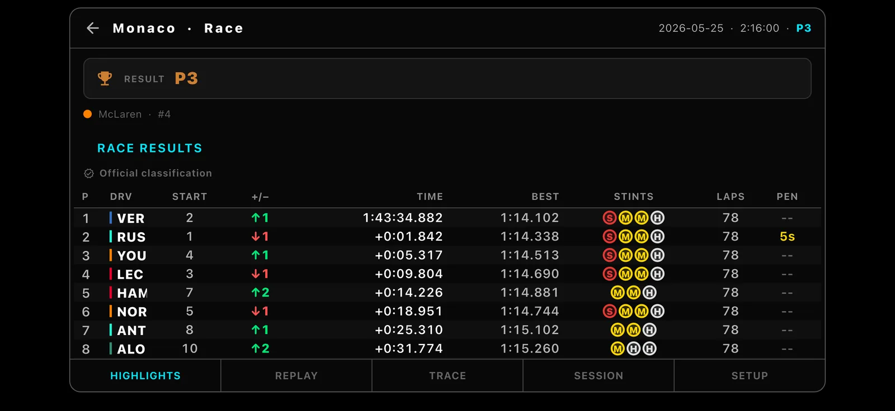

Never published
Your setups, lap traces and race history are never posted to a leaderboard or shared with other drivers.
Sim racing companion for iPhone
Your phone becomes your live dashboard, or the pit wall beside your cockpit. Jax Max Delta turns live F1 telemetry into on-track assistance — and keeps a race memory of every session, using it to prepare you for the next one.
Prepare for Session at Spa — map, then corner by corner
Before · During · After
Jax Max Delta follows the full arc of a session: what to know before you leave the garage, what matters while you drive, and what actually happened once it's over.
Before
Choose the circuit and car, then study the layout, corners, tyres, setup notes and your own history there.
During
A live dashboard, Jax on the radio and a full pit wall — readable at a glance on your phone.
After
Every session saved on your device: results, setups, conditions, lap traces — and a replay of how the race unfolded.
Before · Prepare for Session
Prepare for Session brings circuit knowledge and your own history together. Choose the track and the car, then review what matters for the session ahead — practice, qualifying, sprint or race.
Preparation data varies by circuit and car. JMD shows what it holds for the combination you choose, and tells you when something isn't available.



During · Live Dashboard
Set your iPhone beside the wheel and keep the numbers that matter in view — without changing camera or cluttering the game HUD.
Jax · Voice
Jax is your race engineer's voice: short, timely calls about what just changed, so your eyes stay on the track. Choose which categories you hear — and adjust them mid-session with Quick Jax from the Pit Wall.
Jax informs and reminds. The driving — and the strategy calls — stay yours.
During · Pit Wall
When you need more than the dashboard, open the Pit Wall — one tap from the dashboard, or straight from the Home screen. The whole field, the whole circuit and your own car in one landscape view.



After · Race Replay
Race Replay rebuilds a race from the telemetry JMD captured and plays it back lap by lap: the timing tower reshuffling, gaps opening and closing, tyres changing, and the moments that decided it.
Races & sprint races
Race Replay works from the data your device received during the race. When the game sends no final classification, JMD rebuilds the result from captured timing if there is enough of it — it never invents what was never received.
More about Race Replay →After · Session History
Completed sessions are saved on your device and reviewed according to what they were: practice and qualifying lead with pace, races tell the whole story.
What a session contains depends on what the game sent. JMD fills gaps from captured data where it can, and shows missing data as missing.


Private by design
Many telemetry services are built around leaderboards and shared laps. League and esports drivers protect their setups, traces and technique — so Jax Max Delta keeps them private.
Your setups, lap traces and race history are never posted to a leaderboard or shared with other drivers.
Sessions, setups, lap traces and race history are saved in the app's private storage on your device.
Nothing to sign up for, and no automatic email collection.
Optional backup goes to your private iCloud container, which Camilore cannot read. Lap traces stay on your iPhone.
No ads, no tracking. Crash reports go to Firebase Crashlytics, and Apple and RevenueCat confirm your subscription status — never your race data.
Compatibility
Jax Max Delta listens for the UDP telemetry your EA SPORTS F1 game sends over your local network. Your iPhone simply needs to be on the same network as your console or PC.
Android is not available yet.
Availability
Jax Max Delta is getting ready for its public release on iPhone. Questions or feedback in the meantime? We'd love to hear from you.